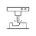

Retained equipment
다양한 경험과 전 공장 최신
생산설비에 기반한 전문성
-
설계
-
2D,3D 현품로부터 후속 공정에 필요한 주조품 Tooling에 대한 3D 모델링, 2D 설계를 수행하고 있습니다.
- 
-
목형 및 금형 제작
-
자체 설비를 이용하여 목형에서부터 양산금형 까지 제작,공급하고 있습니다.
-
주조
-
철계 합금 및 비철계 합금의 용해 및 주조를 수행하고 있습니다.
-
기계가공
-
공차관리와 공정관리가 필요한 부품에 대해 공급하고 있습니다.

-
검사 및 측정
-
3차원측정, 형상측정, 조도측정 등 제품의 요구특성을 측정 및 검사 할 수 있는 설비를 보유하고 있습니다.